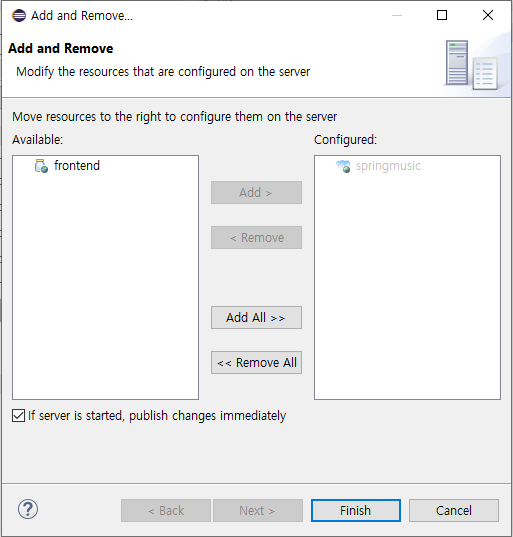

PaaS-TA 활용
PaaS-TA 는 정부에서 오픈소스 Cloud Foundry를 기반으로 개발한 한국형 개방형 클라우드 플랫폼이다. 창업플랫폼에서는 PaaS-TA 3.0(Penne) 기준으로 제공한다. 보다 자세한 내용은 아래 링크를 통해 확인할 수 있다.
https://guide.paas-ta.kr/guide-3.5-penne#undefined-4
PaaS-TA 사용 신청하기
PaaS-TA 3.0과 창업 플랫폼을 같이 운영하는 지원 센터를 통해서 신청이 가능하다. 현재는 K-ICT 클라우드혁신센터를 통해 무료로 제공하고 있지만 사용자 제한을 두고 있으니 웹사이트를 통해서 사용 가능 여부를 확인한다.
K-ICT 클라우드 혁신 센터 https://www.cloud.or.kr 에서 운영중인 PaaS-TA 계정 신청
PaaS-TA 계정신청 // 2020년 11월 30일 이후에는 신청 경로가 변경될 수 있습니다.
PaaS-TA 로그인
클라우드 기반 창업 플랫폼은 PaaS-TA 3.1, 3.5을 기준으로 제공하기 때문에 PaaS-TA 버전을 확인 한다.
제공 버전 : PaaS-TA 3.1, 3.5
포털 로그인
접속가능한 URL을 통해 PaaS-TA 사용자 포털에 접속하면 메인 페이지가 호출되고 우측 상단의 로그인을 통해 접속한다.
포털 메인 페이지 Dashboard가 보인다. 배포된 앱과 서비스를 기본으로 보여준다.
CF CLI 로그인
CF CLI을 통해서도 접속이 가능하다. CF CLI 설치 가이드는 아래 링크를 참조한다.
$ cf login -a 접속URI --skip-ssl-validation
API endpoint: 접속URI
Email>계정
Password>비밀번호
Authenticating...
OK
Targeted org system
Targeted space paas-ta
API endpoint: https://api.11.123.123.22.xip.io(API version: 2.116.0)
User: admin
Org: system
Space: paas-ta
PaaS-TA 에서 개발 환경 구성하기
PaaS-TA에서는 다양한 언어 빌드팩을 포함한 개발 환경을 제공한다. 기본으로는 PaaS-TA 운영자가 제공하는 샘플앱을 기반으로 초기 개발 환경이 구성할 수 있다.
개발 환경 구성과 앱 푸시를 실행하는 방법에는 다음과 같은 유형이 있다.
포털을 이용한 샘플앱 푸시
CF CLI을 이용한 빌드파일을 기반으로 앱 푸시
eclipse IDE Plugin을 이용한 앱 푸시
포털을 이용한 샘플앱 푸시
포털에서는 운영자가 등록해놓은 샘플앱 파일을 기반으로 환경을 구성할 수 있다. 운영자가 샘플앱을 등록해 놓은 경우에만 이용이 가능하다. 만약 포털에서 개발환경 구성 작업 수행 시 에러가 난다면 운영자에게 샘플앱 등록을 요청해야 한다.
앱 푸시 방법
Dashboard > 애플리케이션을 선택한다. 또는 상단 TOP 메뉴에서 카탈로그를 선택한다.
왼쪽 메뉴에서 앱 개발환경을 선택한다.
앱 개발환경 목록에서 JAVA8 오프라인 앱 개발환경을 선택한다.
조직(org)와 영역(space)을 선택한다.
Memory & Disk을 선택한다.
앱 이름을 입력한다.
라우트를 등록한다.(입력하지 않으면 랜덤 이름이 생성된다.)
생성 버튼을 누른다.
앱 푸시 결과 확인
앱 푸시가 정상적으로 완료되었다면 Dashbord를 통해 앱 푸시 결과를 확인할 수 있다.
앱 이름을 클릭하면 앱 상세 정보가 조회된다.
CF CLI을 이용하여 앱 푸시
CF CLI을 이용하여 PaaS-TA cf api서버에 접속한다. cf login 접속 시 접속 가능한 org/space로 이동한다. 준비된 앱 파일이 있는 폴더로 이동한다. 해당 폴터 아래에는 manifest.yml 파일이 있어야 한다.
$ cf push APP_NAME
eclipsse IDE Plugin 을 이용한 앱 푸시
eclipse IDE Plugin을 설치하여 ecclipse IDE와 연동하여 환경을 구성한다. 구성하는 방법은 아래 링크를 참조한다.
설치가 완료되면 서버 등록 과정에 따라 Open PaaS 개발 환경이 등록되었을 것이다. 서버 등록이 완료되면 View 화면에서 Server 탭을 누른다. 등록된 Server 목록을 확인할 수 있으며 서버를 클릭하면 등록된 개요 정보를 볼 수 있다.
서버에 프로젝트 Add and Remove... 메뉴을 통해서 배포할 앱이 있는 프로젝트를 추가한다. Open PaaS 서버에서 마우스 우클릭 후 Add and Remove...을 선택하거나 서버 개요 페이지의 애플리케이션/서비스 탭을 통해 화면상에 드래그앤 드롭으로 프로젝트를 추가한다. Add > 버튼을 누르면 오른쪽 화면으로 이동된다. 정상적으로 잘되었다면 Finish 버튼을 클릭한다.

주의 사항 : 서버에 프로젝트 추가 시 Open PaaS에 이미 배포된 앱 목록이 보인다. Open PaaS 서버는 동기화되고 있어 기존 앱 목록을 Remove 시키지 않도록 주의해야 한다.
manifest.yml 파일에 있는 내용을 읽어서 화면에 표시되고 만약 수정이 했다면 "매니페스트 파일 저장" 체크박스를 체크한다. 앱 이름과 빌드팩 명칭을 등록한다.
Next 버튼을 누르면 서비도메인, 도메인, 접속URL, 메모리을 등록하는 화면이 나온다. manifest.yml의 기본정보를 가져와서 화면에 정의되고 도메인은 앱 이름을 기본으로 할당한다. Finish 버튼을 누르면 선택한 Open PaaS 환경 서버에 앱 배포를 시작한다.
배포가 완료되면 콘솔에 아래와 같이 정상적으로 동작되었음을 확인할 수 있다.
eclipse에서 배포가 완료되었다면 PaaS-TA 포털을 통해서 확인할 수 있다. PaaS-TA 사용자 포털 로그인 후 Dashboard에 배포한 startup 앱이 보이는지 확인한다.
- 참고 : eclipse 에서 Java project로 생성한 프로젝트는 기본으로 Open PaaS 서버에서 배포가 가능한 앱으로 인식하지만 다른 프로젝트로 생성했다면 Project > Properties > Project Facets 에서 Cloud Foundry Application 항목을 체크한다.